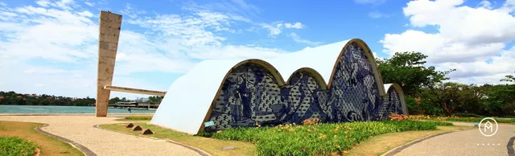
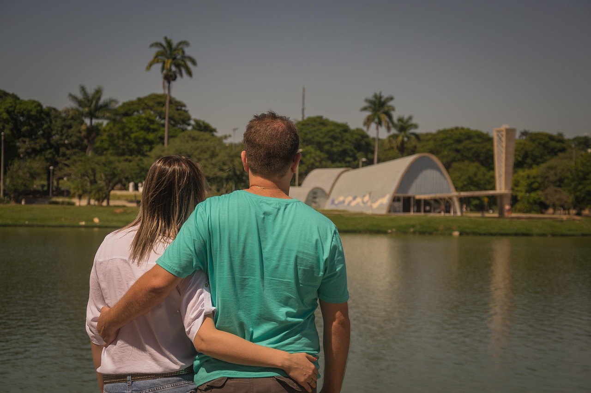

História da Pampulha
Planejamento da Pampulha
Estratégias de Limpeza da Pampulha
Endereço da Pampulha
Estratégias de limpeza da Pampulha

A estratégia para a limpeza da Lagoa da Pampulha envolve a interligação de esgotos para evitar o despejo na lagoa, a limpeza contínua da orla e do espelho d'água para a retirada de lixo, e a implantação de sistemas de oxigenação para acelerar a degradação da matéria orgânica. O Plano Reviva Pampulha, resultado de um acordo entre as prefeituras de Belo Horizonte e Contagem e a Copasa, é um plano abrangente que foca nestes eixos, incluindo mobilização social e monitoramento contínuo da qualidade da água.
Principais Eixos da Estratégia
- Saneamento Básico:
A principal iniciativa é garantir o tratamento e a interligação da rede de esgoto para milhares de imóveis na Bacia da Pampulha, impedindo o lançamento de esgoto "in natura" na lagoa.
- Manutenção da Orla e do Espelho d'Água:
A Prefeitura de Belo Horizonte (PBH) mantém contratos de natureza continuada para a retirada diária de resíduos sólidos da orla e da superfície da lagoa.
- Saneamento Básico:

A principal iniciativa é garantir o tratamento e a interligação da rede de esgoto para milhares de imóveis na Bacia da Pampulha, impedindo o lançamento de esgoto "in natura" na lagoa.
- Manutenção da Orla e do Espelho d'Água
A Prefeitura de Belo Horizonte (PBH) mantém contratos de natureza continuada para a retirada diária de resíduos sólidos da orla e da superfície da lagoa.
- Melhoria das Águas:
Recentemente, foi proposta a técnica de injeção de oxigênio dissolvido supersaturado nas águas para acelerar a degradação da matéria orgânica e combater a eutrofização.
- Monitoramento Contínuo:
O plano inclui a implementação e o aprimoramento de pontos de amostragem para monitorar a qualidade da água e avaliar a eficácia das ações.
 Envolvidos no Projeto.
Envolvidos no Projeto.
Prefeitura de Belo Horizonte (PBH): Responsável pela limpeza da orla e do espelho d'água e pelo plano geral de ação.
Prefeitura de Contagem: Parceira no plano de despoluição, com responsabilidades sobre a bacia hidrográfica.
Companhia de Sneamento de Minas Gerais (Copasa): Responsável pela implantação e extensão da rede de esgoto na bacia da Pampulha.
ribunal de Contas do Estado de Minas Gerais (TCEMG): Acompanha as ações e o cumprimento dos planos de ação.
Objetivos a Longo Prazo
Eliminar o lançamento de esgoto na lagoa.
Reverter a eutrofização, eliminando odores e mortandade de peixes.
Melhorar a qualidade da água para fins de contemplação paisagística.
Garantir um processo de limpeza e recuperação contínuo e sustentável da lagoa.
